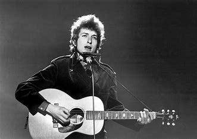
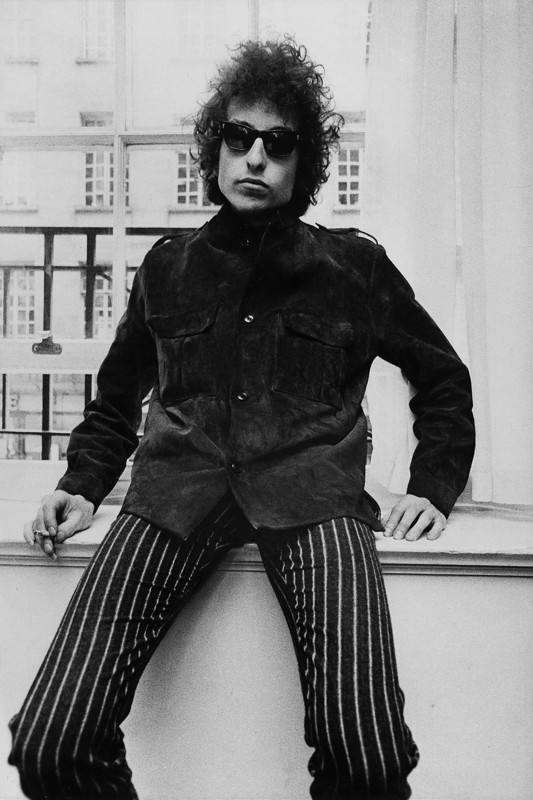

Number 3: Bob Dylan
"I ranked Bob Dylan at number 3 because, while he may not have had the same commercial dominance as The Beatles or The Rolling Stones, his impact on music, culture, and songwriting was unparalleled in the '60s. Dylan revolutionized folk and rock with deep, poetic lyrics that tackled politics, war, and social change, influencing an entire generation. Songs like Blowin’ in the Wind and The Times They Are a-Changin’ became anthems of the civil rights and anti-war movements, proving that music could be more than entertainment—it could be a powerful force for change. When he famously "went electric" in 1965, with Like a Rolling Stone, he reshaped rock music forever, paving the way for countless artists to experiment with storytelling and sound. Dylan's influence stretched far beyond his own performances—his songwriting shaped the work of The Beatles, The Rolling Stones, Jimi Hendrix, and many others. While he wasn’t a pop superstar in the traditional sense, his artistic influence and cultural impact made him one of the most important figures of the decade, securing his spot at number 3." - ChatGPT
Bob Dylan has an extraordinary list of accomplishments that solidify his legacy as one of the most influential musicians of all time. Here are some of his most notable achievements:
Music & Cultural Impact
- Redefined folk and rock music with poetic, socially conscious lyrics.
- "Went electric" in 1965, revolutionizing rock with Like a Rolling Stone.
- His songs, including Blowin' in the Wind and The Times They Are a-Changin', became anthems of the civil rights and anti-war movements.
- Inspired countless artists, including The Beatles, The Rolling Stones, Bruce Springsteen, and Jimi Hendrix (who famously covered All Along the Watchtower).
Awards and Honors
- Nobel Prize in Literature (2016) – The first musician to win this, recognizing his songwriting as high literary art.
- Presidential Medal of Freedom (2012) – The highest civilian honor in the U.S.
- 10 Grammy Awards, including a Lifetime Achievement Award (1991).
- Academy Award (Oscar, 2001) for Things Have Changed (Best Original Song).
- Golden Globe Award (2001) for the same song.
- Rock and Roll Hall of Fame Inductee (1988).
Notable Albums
- The Freewheelin’ Bob Dylan (1963) – Featured Blowin’ in the Wind.
- Bringing It All Back Home (1965) – First album to introduce electric rock elements.
- Highway 61 Revisited (1965) – Featured Like a Rolling Stone, one of the greatest rock songs ever.
- Blonde on Blonde (1966) – One of the first double albums in rock history.
- Blood on the Tracks (1975) – Often ranked among the greatest albums ever.
Longevity & Continued Influence
- Over 60 years in the music industry with more than 39 studio albums.
- Continues to tour extensively on his "Never Ending Tour", which started in 1988.
- His lyrics are studied in literature courses at universities worldwide.
- Upcoming Events

Bob Dylan’s impact on music, culture, and literature is unmatched. He didn’t just write songs—he changed how people thought about music as an art form.